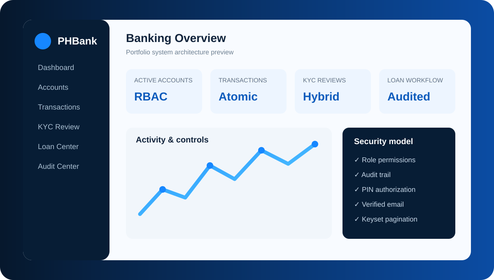

Portfolio Project · Active Development
BankFlow / PHBank Banking Management System
A Java desktop banking portfolio focused on layered architecture, secure workflows, auditability, permissions, KYC, transactions, and loan processing.

A Java desktop banking portfolio focused on layered architecture, secure workflows, auditability, permissions, KYC, transactions, and loan processing.
Built around model, service, and DAO responsibilities with MySQL persistence and SQL migrations. The structure separates UI concerns from business rules and database access.
Role-based access, security-sensitive authorization, KYC review, audit history, verified-email flows, and controlled staff/customer actions are treated as first-class system concerns.
Layered design, CRUD, transactions, permission checks, validation, SQL integration, performance-aware pagination, testing, and maintainable business workflows.